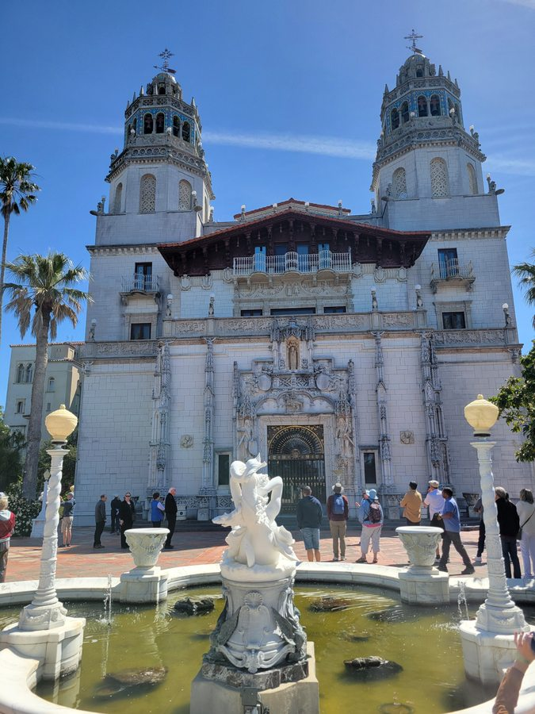
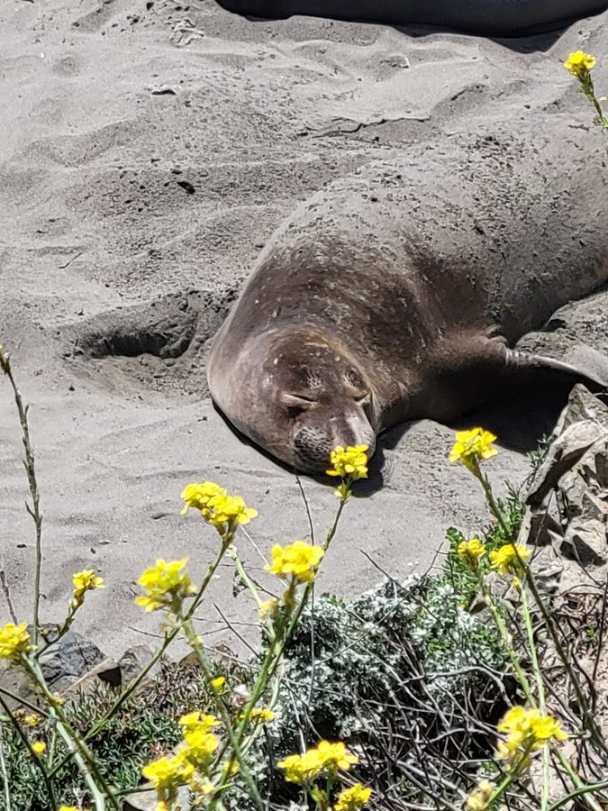

Friday, May 1, 2026
Casa Del Sol, San Simeon, CA 93452, USA

Spent the morning touring Hearst Castle's Neptune Pool and Casa Grande, then drove up the coast to watch elephant seals and pelicans at Piedras Blancas under bright midday sun.
Highlights:
- Hearst Castle — Built 1919–1947 for William Randolph Hearst; designed by architect Julia Morgan in Spanish Colonial Revival style
- Neptune Pool — Outdoor marble pool featuring a Greco-Roman temple façade; completed in its current form in 1936
- Piedras Blancas elephant seal rookery — Major northern elephant seal haul-out site near San Simeon, open for free public viewing year-round
- Brown pelican — Pacific Coast species; once endangered, recovered after DDT ban in 1972


